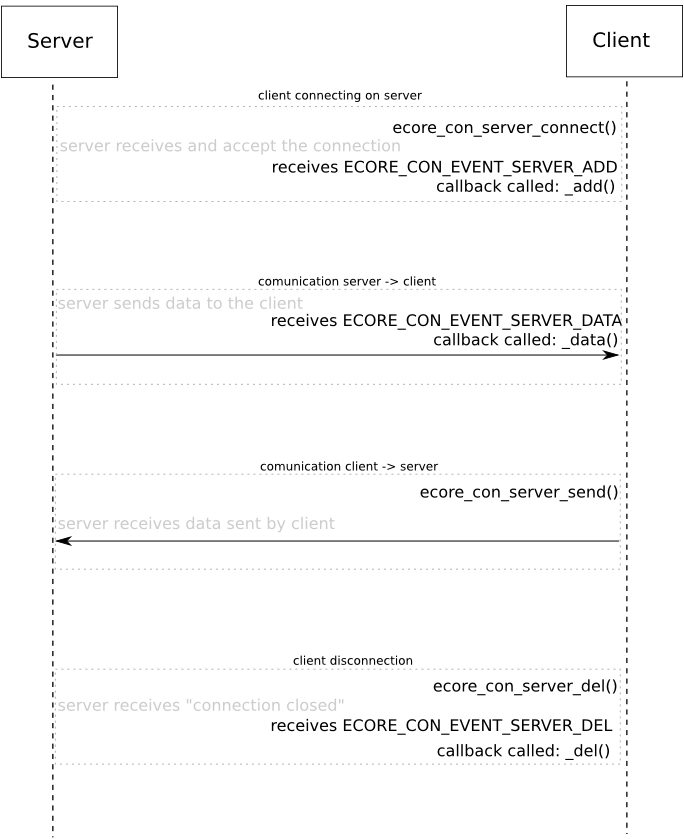

Following the same idea as the Ecore_Con - Creating a server , this example will demonstrate how to create a client that connects to a specified server through a TCP port.
You can see the full source code at ecore_con_client_simple_example.c.
Starting from the main function, after reading the command line argument list and initializing the libraries, we try to connect to the server:
main(int argc, const char *argv[])
{
const char *address;
int port = 8080;
if (argc < 2)
{
printf("wrong usage. Command syntax is:\n");
printf("\tecore_con_client_simple_example <address> [port]\n");
exit(1);
}
address = argv[1];
if (argc > 2)
port = atoi(argv[2]);
{
printf("could not connect to the server: %s, port %d.\n",
address, port);
exit(2);
ECORE_CON_API int ecore_con_init(void)
Initializes the Ecore_Con library.
Definition: ecore_con.c:68
struct _Ecore_Con_Server Ecore_Con_Server
Used to provide legacy API/ABI compatibility with non-Eo applications.
Definition: Ecore_Con.h:294
ECORE_CON_API Ecore_Con_Server * ecore_con_server_connect(Ecore_Con_Type type, const char *name, int port, const void *data)
Creates a connection to the specified server and return an associated object.
Definition: ecore_con_legacy.c:2165
EAPI int ecore_init(void)
Sets up connections, signal handlers, sockets etc.
Definition: ecore.c:230
EINA_API int eina_init(void)
Initializes the Eina library.
Definition: eina_main.c:291
}
After doing this, everything else in main is setting up callbacks for the client events, starting the main loop and shutting down the libraries after it.
Now let's go to the callbacks. These callbacks are very similar to the server callbacks (our implementation for this example is very simple). On the _add callback, we just set a data structure to the server, print some information about the server, and send a welcome message to it:
{
char welcome[] = "hello! - sent from the client";
struct _Server *server = malloc(sizeof(*server));
server->sdata = 0;
printf("Server with ip %s, name %s, port %d, connected = %d!\n",
ECORE_CON_API int ecore_con_server_port_get(const Ecore_Con_Server *svr)
Retrieves the server port in use.
Definition: ecore_con_legacy.c:2347
ECORE_CON_API void * ecore_con_server_data_set(Ecore_Con_Server *svr, void *data)
Sets the data associated with the given server.
Definition: ecore_con_legacy.c:2322
ECORE_CON_API const char * ecore_con_server_ip_get(const Ecore_Con_Server *svr)
Gets the IP address of a server that has been connected to.
Definition: ecore_con_legacy.c:2398
ECORE_CON_API const char * ecore_con_server_name_get(const Ecore_Con_Server *svr)
Retrieves the name of server.
Definition: ecore_con_legacy.c:2260
ECORE_CON_API Eina_Bool ecore_con_server_connected_get(const Ecore_Con_Server *svr)
Retrieves whether the given server is currently connected.
Definition: ecore_con_legacy.c:2334
ECORE_CON_API void ecore_con_server_flush(Ecore_Con_Server *svr)
Flushes all pending data to the given server.
Definition: ecore_con_legacy.c:2412
ECORE_CON_API int ecore_con_server_send(Ecore_Con_Server *svr, const void *data, int size)
Sends the given data to the given server.
Definition: ecore_con_legacy.c:2354
#define ECORE_CALLBACK_RENEW
Return value to keep a callback.
Definition: Ecore_Common.h:153
unsigned char Eina_Bool
Type to mimic a boolean.
Definition: eina_types.h:527
#define EINA_UNUSED
Used to indicate that a function parameter is purposely unused.
Definition: eina_types.h:339
Used as the data param for the ECORE_CON_EVENT_SERVER_ADD event.
Definition: Ecore_Con.h:480
Ecore_Con_Server * server
the server that was connected to
Definition: Ecore_Con.h:481
}
The _del callback is as simple as the previous one. We free the data associated with the server, print the uptime of this client, and quit the main loop (since there's nothing to do once we disconnect):
{
{
printf("Failed to establish connection to the server.\nExiting.\n");
void ecore_main_loop_quit(void)
Quits the main loop once all the events currently on the queue have been processed.
Definition: ecore_main.c:1321
Used as the data param for the ECORE_CON_EVENT_SERVER_DEL event.
Definition: Ecore_Con.h:499
Ecore_Con_Server * server
the client that was lost
Definition: Ecore_Con.h:500
}
The _data callback is also similar to the server data callback. it will print any received data, and increase the data counter in the structure associated with this server:
{
char fmt[128];
snprintf(fmt, sizeof(fmt),
"Received %i bytes from server:\n"
">>>>>\n"
"%%.%is\n"
">>>>>\n",
server->sdata += ev->
size;
ECORE_CON_API void * ecore_con_server_data_get(Ecore_Con_Server *svr)
Retrieves the data associated with the given server.
Definition: ecore_con_legacy.c:2315
Used as the data param for the ECORE_CON_EVENT_SERVER_DATA event.
Definition: Ecore_Con.h:529
int size
the length of the data sent
Definition: Ecore_Con.h:532
Ecore_Con_Server * server
the server that was connected to
Definition: Ecore_Con.h:530
void * data
the data that the server sent
Definition: Ecore_Con.h:531
}
You can see the server counterpart functions of the ones used in this example in the Ecore_Con - Creating a server.
This example will connect to the server and start comunicating with it, as demonstrated in the following diagram:

- Note
- This example contains a serious security flaw: it doesn't check for the size of data being received, thus allowing to the string to be exploited in some way. However, it is left like this to make the code simpler and just demonstrate the API usage.